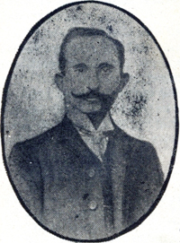

Hasan Fehmi Bey (1874-1909)

Ýttihat ve Terakki Cemiyetinin uyguladýðý baský rejimine çok sert eleþtiriler getirmiþ ve yazýlarýndan dolayý iktidar partisinin büyük tepkisini çekmiþtir. Aldýðý tehditlerden sonra da eleþtirilerine devam etmiþtir. Bu eleþtirilerinden ötürü Ýttihat ve Terakki Cemiyeti tarafýndan öldürtüldüðü ifade edilmiþ ve cinayet aydýnlatýlamamýþtýr. Risale-i Nur’da ismi zikredilmiþ, 31 Mart Olayý’nýn ortaya çýkýþ sebeplerinden birisinin bu cinayetin aydýnlatýlmasý olduðu ifade edilmiþtir. Bu olay Ýttihat ve Terakki idaresine olan tepkiyi daha da arttýrmýþtýr.Hasan Fehmi 1874 yýlýnda doðdu. Çocukluk yýllarý ve aldýðý ilk eðitim ile ilgili olarak fazla bir bilgi yoktur. Mülkiye Mektebi’ne baþlamadan önce hangi okullarý okuduðu biyografilerinde pek belirtilmemektedir. Üniversiteyi bitirdikten sonra Paris’e gitti. Burada Ýttihat ve Terakki Cemiyeti’nin mensuplarýyla tanýþtý. Prens Sabahattin ve çevresini de burada tanýdý. Daha sonra Mýsýr’a gitti. Ýkinci Meþrutiyetin ilaný üzerine Ýstanbul’a geri döndü.
Ýstanbul’a dönen Hasan Fehmi Bey, Mevlanzade Rýfat Beyin sahibi bulunduðu Serbesti gazetesinde yazýlar yazmaya baþladý. Gazetenin baþyazarlýðýný da üstlendi. Yazýlarýný ateþli, heyecanlý bir dille yazdý. Ülkedeki deðiþimleri savunan bir kiþi olarak ortaya çýktý. Bir bakýma dönemin radikal yazarlarýndan biri sayýlýyordu. Düþüncelerin özgürce sergilenmesinden yana bir tavýr koydu. Bu kiþiliði ve yazýlarý sebebiyle kýsa zamanda ilgi odaðý oldu. Gazete bu vesile ile çok sayýda insanýn eline ulaþmaya baþladý. Diðer taraftan bazý yazarlar da bu gazetede yazý yazmak için giriþimde bulunmaktaydýlar.
Ýttihat ve Terakki Cemiyeti özgürlükleri geniþletme ve daha fazla özgür ortamý saðlamayý hedef edindiðini açýklamýþ ve muhtelif vesilelerle bu konuda tahþidatta bulunmuþtu. Ancak, iktidara gelen Ýttihat mensuplarý geçmiþe oranla çok daha fazla tahammülsüz ve eleþtiriye kapalý bir tutum sergilediler. Baský rejimine karþý çýkarak taraftar bulan ve bu yüzden iktidar þansý elde eden parti, daha fazla baský yapmaya baþladý. Cemiyetin bu tavrý, çok sert eleþtirilere sebep oldu. Bu sert eleþtiriyi yapanlardan önemli birisi de Hasan Fehmi idi. Yazýlarý sebebiyle iktidar partisince adeta nefret edilen isimlerden biri oldu. Sürekli tehdit edilmeye baþlandý. Ülkede fikri tahribat yapmakla ve milletin dimaðýný tahrip etmekle itham edildi.
Muhalif gazeteci durumunda olan Hasan Fehmi 6 Nisan 1909 günü okul arkadaþlarýndan Kaymakam Ertuðrul Þakir ile Beyoðlu’ndan Sirkeci’ye gitmekteydi. Galata Köprüsü’nü geçtikten sonra Sirkeci Postahanesinin önünde meçhul bir kiþinin kurþunlarýna hedef oldu ve hayatýný kaybetti. Ertesi gün gazetesi öldürülüþünü, “Serbesti-i matbuatýn (basýn özgürlüðünün) ilk kurbaný, ömrünü menfalarda (sürgünlerde) geçirmiþ olan evlad-ý hürriyetten Hasan Fehmi Beyin ruhuna fatiha.” yazýsýyla okuyucularýna duyurdu. Hasan Fehmi Beyin katledildiði “6 Nisan Günü” Türkiye Gazeteciler Cemiyeti tarafýndan, “Basýn Þehitleri Günü” ve “Hasan Fehmi Bey Anma Günü” olarak kabul edilmekte ve bu vesile ile bazý etkinlikler yapýlmaktadýr.
Bilindiði gibi Sultan Abdülhamit döneminde yapýlan bazý yanlýþ uygulama ve baskýlar eleþtirilere sebep olmuþ, özellikle fikirler önüne konan engeller, hür düþünce ortamýnýn geliþmesine mani olmuþtur. 1907 tarihinde Ýstanbul’a gelen Bediüzzaman Hazretleri de basýn yoluyla yanlýþ uygulamalarý eleþtirmiþ ve bunlara karþý çýkmýþtýr. Akabinde Meþrutiyet’in ilânýný “Hürriyetin ilâný” olarak görüp alkýþlamýþ ve þeriat adýna sahiplenmiþtir. Gerek Meþrutiyetin ilânýndan evvel ve gerekse ilânýndan sonra, Meþrutiyet konusundaki vehim ve endiþeleri sözlü ve yazýlý ifadeleriyle ortadan kaldýrmaya çalýþmýþtýr. Ancak, 31 Mart Hadisesinin ortaya çýkýþý ve sonrasýndaki baský, hür ortamý adeta ortadan kaldýrmýþtýr. Divan-ý Harbe verilen Bediüzzaman da Ýttihat ve Terakki hükümetinin uyguladýðý baskýyý sert bir þekilde eleþtirmiþtir.
Ýttihat ve Terakki’nin bazý mensuplarý ile önceden Meþrutiyet’i savunan Bediüzzaman daha sonra onlarý eleþtirmekten de çekinmemiþ ve yanlýþlarýný sert bir þekilde dile getirmiþtir; “Bu hükûmet zaman-ý istibdatta akla husûmet ediyordu; þimdi de hayata adavet ediyor. Eðer hükûmet böyle olursa; yaþasýn cünûn, yaþasýn mevt, zalimler için de yaþasýn Cehennem!..” Tarihçe-i Hayat, s. 54) demek suretiyle yeni hükümetin Sultan Abdulhamit dönemindekilere kýyasla çok daha büyük yanlýþlar içinde olduðunu yüzlerine haykýrmýþtýr.
Bediüzzaman, Hasan Fehmi Bey’in ismini zikrederken 31 Mart Hadisesine de deðinmiþ ve sebeplerini izah etmiþtir. 31 Mart Olayýný “müthiþ fýrtýna” olarak belirten Bediüzzaman, büyük bir felakete sebep olacakken, lisanlardaki “þeriat” lafzýnýn fýrtýnanýn gayet hafif atlatýlmasýna vesile olduðunu kaydetmiþtir. Bu arada gazetelerin yanlýþ ve abartýlý yorumlarýný da tenkit etmiþtir. Olayýn anlaþýlabilmesi ve gerçeðin ortaya çýkmasý için aþaðýdaki yedi durumun incelenmesinin yeterli olacaðýný sözlerine eklemiþtir:
“1. Yüzde doksaný Ýttihad ve Terakkinin aleyhinde, hem onlarýn tahakkümü ve istibdadý aleyhinde bir hareket idi.
2. Fýrkalarýn meydan-ý münakaþâtý olan vükelâyý tebdil idi.
3. Sultan-ý mazlûmu sukut-u musammemden kurtarmaktý.
4. Hissiyat-ý askeriyenin ve âdâb-ý dindaranelerinin muhalif telkinatýn önüne set olmaktý.
5. Pek çok büyütülen Hasan Fehmi Beyin kàtilini meydana çýkarmaktý.
6. Kadro haricine çýkanlarý ve alay zabitlerini maðdur etmemekti.
7. Hürriyeti, sefahete þumulünü men ve âdâb-ý þeriatla tahdit ve avâmýn siyaset-i þer’î bildikleri yalnýz kýsas ve kat-ý yed haddini icra idi.
Fakat zemin bataklýk ve dam ve plân serilmiþti. Mukaddes olan itaat-i askeriye feda edildi. Üssü’l-esas esbab, fýrkalarýn taraftarane ve garazkârane münakaþatý ve gazetelerin belâðat yerine mübalâðat ve yalan ve ifratperverane keþmekeþleri idi…” (Divan-ý Harb-i Örfi, s. 43-44).